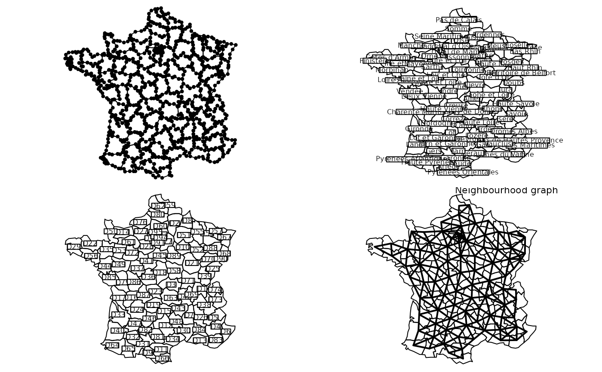
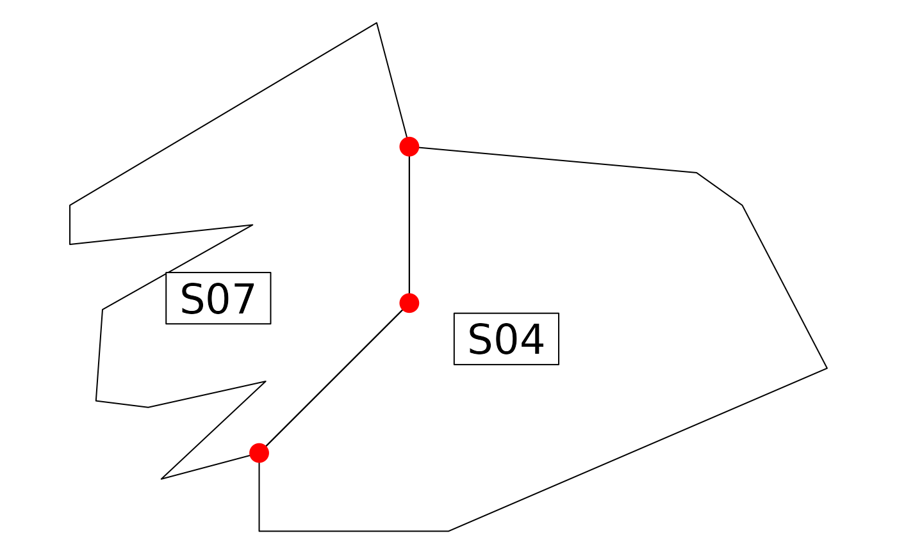

Graphical Display of Areas
area.plot.Rd'area' is a data frame with three variables.
The first variable is a factor defining the polygons.
The second and third variables are the xy coordinates of the
polygon vertices in the order where they are found.
area.plot : grey levels areas mapping
poly2area takes an object of class 'polylist' (maptools package) and returns a data frame of type area.
area2poly takes an object of type 'area' and returns a list of class 'polylist'
area2link takes an object of type 'area' and returns a proximity matrix which terms are given by
the length of the frontier between two polygons.
area.util.contour,area.util.xy and area.util.class are three utility functions.
Usage
area.plot(x, center = NULL, values = NULL, graph = NULL, lwdgraph = 2,
nclasslegend = 8, clegend = 0.75, sub = "", csub = 1,
possub = "topleft", cpoint = 0, label = NULL, clabel = 0, ...)
area2poly(area)
poly2area(polys)
area2link(area)
area.util.contour(area)
area.util.xy(area)Arguments
- x
a data frame with three variables
- center
a matrix with the same row number as x and two columns, the coordinates of polygone centers. If NULL, it is computed with
area.util.xy- values
if not NULL, a vector which values will be mapped to grey levels. The values must be in the same order as the values in
unique(x.area[,1])- graph
if not NULL,
graphis a neighbouring graph (object of class "neig") between polygons- lwdgraph
a line width to draw the neighbouring graph
- nclasslegend
if
valuenot NULL, a number of classes for the legend- clegend
if not NULL, a character size for the legend, used with
par("cex")*clegend- sub
a string of characters to be inserted as sub-title
- csub
a character size for the sub-titles, used with
par("cex")*csub- possub
a string of characters indicating the sub-titles position ("topleft", "topright", "bottomleft", "bottomright")
- cpoint
if positive, a character size for drawing the polygons vertices (check up), used with
par("cex")*cpoint- label
if not NULL, by default the levels of the factor that define the polygons are used as labels. To change this value, use label. These labels must be in the same order than
unique(x.area[,1])- clabel
if not NULL, a character size for the polygon labels,
used withpar("cex")*clabel- polys
a list belonging to the 'polylist' class in the spdep package
- area
a data frame of class 'area'
- ...
further arguments passed to or from other methods
Examples
data(elec88)
par(mfrow = c(2, 2))
area.plot(elec88$area, cpoint = 1)
area.plot(elec88$area, lab = elec88$lab$dep, clab = 0.75)
area.plot(elec88$area, clab = 0.75)
area.plot(elec88$area, graph = neig(area = elec88$area), sub = "Neighbourhood graph",
possub = "topright")

par(mfrow = c(1, 1))
if (FALSE) { # \dontrun{
par(mfrow = c(3, 3))
for(i in 1:9) {
x <- elec88$tab[,i]
area.plot(elec88$area, val = x, sub = names(elec88$tab)[i], csub = 3, cleg = 1.5)
}
par(mfrow = c(1, 1))
if(adegraphicsLoaded()) {
if(requireNamespace("sp", quietly = TRUE)) {
s.value(elec88$xy, elec88$tab, Sp = elec88$Spatial,
method = "color", psub.text = names(elec88$tab), psub.cex = 3,
pSp.col = "white", pgrid.draw = FALSE, porigin.include = FALSE)
}
} else {
par(mfrow = c(3, 3))
for(i in 1:9) {
x <- elec88$tab[, i]
s.value(elec88$xy, elec88$tab[, i], contour = elec88$contour,
meth = "greylevel", sub = names(elec88$tab)[i], csub = 3,
cleg = 1.5, incl = FALSE)
}
par(mfrow = c(1, 1))
}
if(!adegraphicsLoaded()) {
data(irishdata)
par(mfrow = c(2, 2))
w <- ade4:::area.util.contour(irishdata$area)
xy <- ade4:::area.util.xy(irishdata$area)
area.plot(irishdata$area, cpoint = 1)
apply(w, 1, function(x) segments(x[1], x[2], x[3], x[4], lwd = 3))
area.plot(irishdata$area, clabel = 1)
s.label(xy, area = irishdata$area, incl = FALSE, clab = 0,
cpoi = 3, addax = FALSE, contour = w)
s.label(xy, area = irishdata$area, incl = FALSE,
addax = FALSE, contour = w)
par(mfrow = c(1, 1))
}
} # }
data(irishdata)
w <- irishdata$area[c(42:53, 18:25), ]
w
#> poly x y
#> 42 S07 16 50
#> 43 S07 16 44
#> 44 S07 44 47
#> 45 S07 21 34
#> 46 S07 20 20
#> 47 S07 28 19
#> 48 S07 46 23
#> 49 S07 30 8
#> 50 S07 45 12
#> 51 S07 68 35
#> 52 S07 68 59
#> 53 S07 63 78
#> 18 S04 68 35
#> 19 S04 68 59
#> 20 S04 112 55
#> 21 S04 119 50
#> 22 S04 132 25
#> 23 S04 74 0
#> 24 S04 45 0
#> 25 S04 45 12
w$poly <- as.factor(as.character(w$poly))
area.plot(w, clab = 2)
points(68, 59, pch = 20, col = "red", cex = 3)
points(68, 35, pch = 20, col = "red", cex = 3)
points(45, 12, pch = 20, col = "red", cex = 3)

sqrt((59 - 35) ^ 2) + sqrt((68 - 45) ^ 2 + (35 - 12) ^ 2)
#> [1] 56.52691
area2link(w)
#> S07 S04
#> S07 0.00000 56.52691
#> S04 56.52691 0.00000